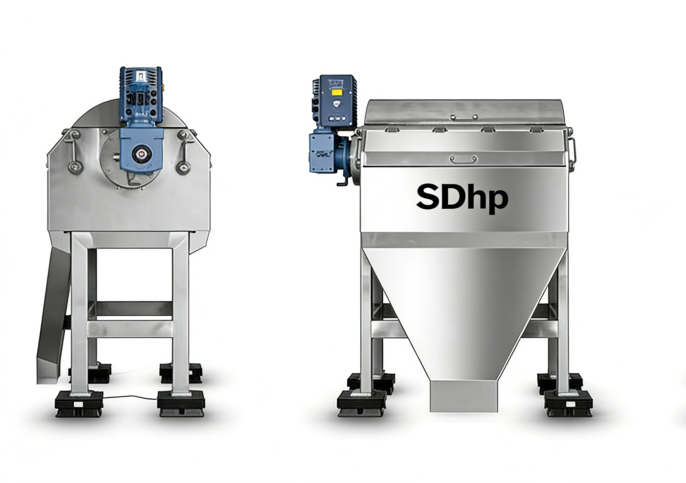
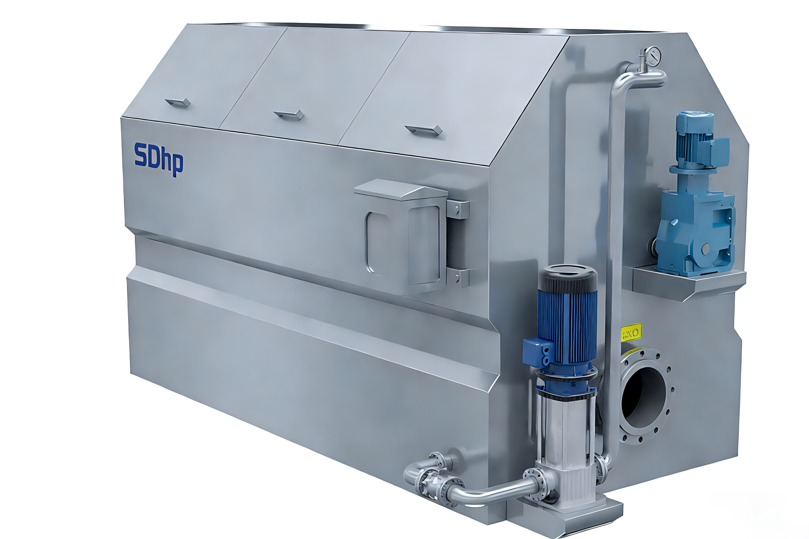
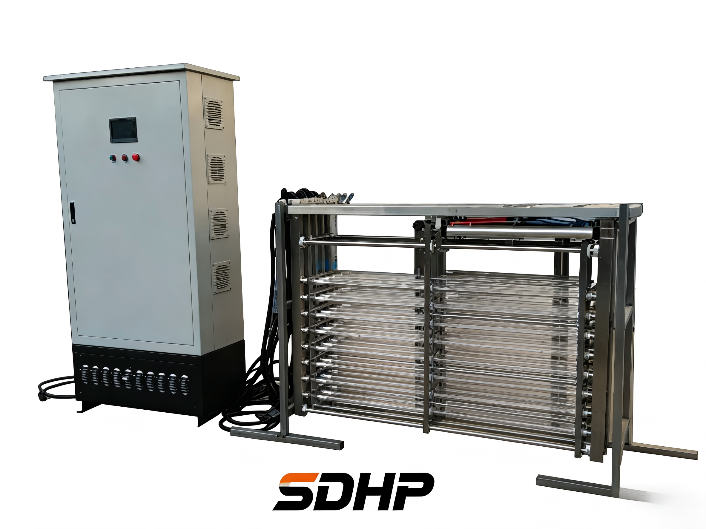

磁分离机
高效分离水体中的磁性污染物，核心采用高强度永磁体，磁场强度可达1.5T以上。设备自动化程度高，可实现连续运行，广泛应用于市政污水、工业废水处理等场景。
处理能力1-100 T/h
磁粉回收率>99%
适用场景市政/工业废水
自动化PLC全自动控制


转鼓式精密过滤器
过滤精度达微米级（8~50μm），有效去除水体中的悬浮物和细小颗粒，产水水质稳定达标。采用不锈钢滤芯，耐腐蚀、使用寿命长，自动反冲洗功能减少维护成本。
过滤精度8~50 μm
材质304/316L不锈钢
反冲洗自动反冲洗
压力等级0.6~1.6 MPa


明渠式紫外线消毒器
采用254nm紫外线杀菌技术，灭菌率达99.99%，无需添加化学药剂，绿色环保。模块化设计便于安装维护，适用于各类水处理消毒环节。
波长254 nm
灭菌率>99.99%
设计模块化即插即用
环保无化学残留

反应池搅拌器
304不锈钢材质打造，配备变频调速控制系统，IP68防护等级。搅拌叶轮经过CFD优化设计，确保池内无搅拌死角，药剂混合均匀，运行平稳可靠。
材质304不锈钢
防护等级IP68
控制方式变频调速
设计CFD优化叶轮

非金属高速剪切机
高速旋转剪切打散矾花和磁性絮体，显著提高后续沉淀分离效果。变频调速设计，可根据水质工况灵活调节转速，运行平稳、噪音低。
功能高速剪切打散
调速变频无级调速
噪音<65 dB
维护免润滑设计

磁混凝设备
将磁分离技术与絮凝反应完美结合的一体化设备。通过投加磁粉与絮凝剂，使污染物形成磁性絮体后快速分离，处理效率高、占地面积小。
工艺磁分离+絮凝
特点一体化设计
占地比传统减少60%
效率停留时间<20min